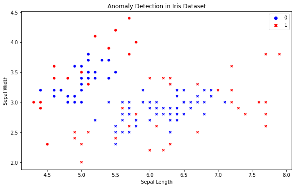

import warnings
warnings.filterwarnings('ignore')
import numpy as np
import matplotlib.pyplot as plt
from sklearn.datasets import load_iris
from scipy import stats
# Load Iris dataset
iris = load_iris()
X = iris.data[:, 0] Finding Imposters in Data : Anomaly Detection
Introduction
Anomaly detection is a pivotal process in data analysis, crucial for identifying unusual patterns that deviate significantly from the majority of data. These anomalies, or outliers, are not just statistical curiosities but often signal significant (and sometimes critical) insights in various fields like finance, healthcare, and cybersecurity.
The Definition
What is an Anomaly?
An anomaly, or an outlier, is an observation that diverges so much from other observations as to arouse suspicion that it was generated by a different mechanism. In data science, detecting these anomalies is vital for various reasons, from preventing fraud to diagnosing diseases.
Types of Anomalies
Point Anomalies: Single data points that are far off from the rest. Contextual Anomalies: Data points that are anomalous in a specific context. Collective Anomalies: A collection of data points that are anomalous but might not be individually.
The Techniques
Statistical Methods
Simple statistical methods, like the Z-score and IQR, are often sufficient for identifying outliers in a dataset.
Machine Learning-Based Approaches
Advanced techniques leverage machine learning algorithms, such as:
Isolation Forest: An algorithm that isolates anomalies instead of profiling normal data points. DBSCAN: A density-based clustering method that identifies regions of high density and points that are isolated from these regions. Autoencoders (Neural Networks): These can learn a compressed representation of the normal data and thus can identify anomalies based on reconstruction errors.
Python Example: Anomaly Detection on the Iris Dataset
The Iris dataset is a classic dataset in the field of machine learning and statistics. For this example, we’ll use one feature of the dataset to simplify the visualization of anomaly detection.
Importing Libraries and Dataset
Visualizing the Data
Let’s start by visualizing the distribution of the first feature (sepal length) of the Iris dataset.
plt.figure(figsize=(10, 6))
plt.hist(X, bins=20, edgecolor='black')
plt.title('Histogram of Sepal Lengths in Iris Dataset')
plt.xlabel('Sepal Length (cm)')
plt.ylabel('Frequency')
plt.show()
Detecting Outliers using Z-score
We will apply the Z-score method to detect any outliers in the data.
z_scores = stats.zscore(X)
abs_z_scores = np.abs(z_scores)
outliers = np.where(abs_z_scores > 2) # Z-score threshold of 2
print("Outlier Indices:", outliers[0])Outlier Indices: [105 117 118 122 131 135]Visualizing the Outliers
Finally, let’s visualize the detected outliers on a scatter plot.
plt.figure(figsize=(10, 6))
plt.scatter(range(len(X)), X, color='blue', label='Data Points')
plt.scatter(outliers[0], X[outliers], color='red', label='Outliers')
plt.axhline(y=np.mean(X), color='c', linestyle='-', label='Mean')
plt.title('Outliers Detection in Iris Dataset')
plt.xlabel('Index')
plt.ylabel('Sepal Length (cm)')
plt.legend()
plt.show()
The Challenges
False Positives and Negatives
One major challenge is distinguishing actual anomalies from noise, which can lead to false positives (mistaking noise for an anomaly) and false negatives (failing to detect an actual anomaly).
High-Dimensional Data
Detecting anomalies in high-dimensional spaces is complex due to the curse of dimensionality. Anomalies might not stand out in higher dimensions as they do in lower ones.
The Applications
Anomaly detection has wide applications:
Finance: Detecting fraud or unusual financial transactions. Healthcare: Identifying rare diseases or unusual responses to treatments. Industrial Operations: Monitoring equipment to predict and prevent failures. Cybersecurity: Detecting intrusions or threats in network traffic.
Conclusions
Anomaly detection is a fascinating and vital area in data science, offering significant benefits across various domains. As data continues to grow in volume and complexity, the importance and challenges of effective anomaly detection will only increase. Emerging trends, including the integration of AI and big data, promise to advance this field further.